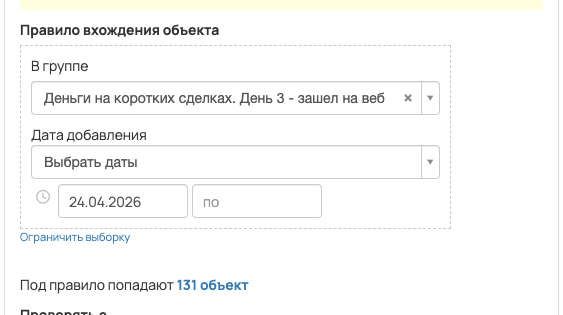
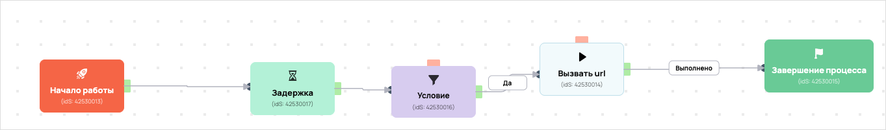

[AMO] [ED] чекин_запуск_РТ6 повтор день 3 99607
- ID процесса:
2445650 - Объект: Пользователи
- Статус: Ожидание событий
Описание из GetCourse
30.06.2026. Подробный ход процесса GetCourse:
Главное: В процесс попадают пользователи по правилу: Дата добавления в группу.
Процесс работает с объектом GetCourse: Пользователи. Текущий статус процесса: Ожидание событий.
Как идет процесс внутри GetCourse:
- Схема состоит из 7 блоков и 9 переходов.
Конец подробного хода процесса GetCourse.
22.04.2026: Задача: https://spi.bitrix24.ru/online/?IM_TASK=chat24416&IM_MESSAGE=2093182
https://vakas-tools.ru/account/base/amo.php?base_id=99607
https://investorpractic.getcourse.ru/d_veb_3 https://investorpractic.getcourse.ru/pl/webinar/show?id=3275716
Воронка: Отдел Доведения, Этап Посмотрели вебинар 3 Название в амо: чекин_запуск_РТ6 Тег в амо: чекин_запуск_РТ6
26.05.2026 по задаче https://spi.bitrix24.ru/online/?IM_TASK=chat24416&IM_MESSAGE=2117804: добавлена передача комментариев из вебинарной комнаты в amoCRM. Поле GetCourse: у пользователя — webinar_user_comments. В процессах по пользователям передаем как {object.webinar_user_comments}; в процессах по заказам — как {object.user.webinar_user_comments}. В Vakas это приходит в параметр {comments} и записывается через «Шаблон примечания 2»: Комментарии из вебинарной комнаты: {comments}
Понятное описание процесса
- Процесс работает с объектом GetCourse: Пользователи. Текущий статус процесса: Ожидание событий.
- На вход попадают данные так: В процесс попадают пользователи по правилу: Дата добавления в группу.
- Внутри схемы есть дополнительные проверки/ожидания: 1. Основные блоки: «Условие».
- Дальше процесс делает прямые вызовы Vakas: 1. Напрямую задействованы базы: 99607.
- Передача: 99607. База 99607: Формы и анкеты. Передаются параметры:
name,email,phone,getcourse_user_id,utm_source,utm_medium,utm_campaign,utm_content,utm_term,comments. - Что происходит в amoCRM: На входе в этап ОТДЕЛ - ДОВЕДЕНИЯ -> ПОСМОТРЕЛИ ВЕБИНАР 3 [57387594] база ищет дубль и при необходимости переводит найденную сделку в рабочий этап.
Ход процесса в GetCourse
- Схема состоит из 7 блоков и 9 переходов.
- По типам: стартов 1, условий/ожиданий 1, вызовов URL 3, изменений полей 0, финалов 1.
Блоки процесса: что делают и зачем нужны:
- Блок
42530013«Начало работы» (старт). Что делает: Запускает выполнение схемы для объекта, который попал под правило входа процесса. Зачем нужен: Нужен как точка входа: от него GetCourse начинает движение объекта по схеме. Дальше: если результат «Выполнено», идет в «Задержка». - Блок
42530017«Задержка» (таймер). Что делает: Делает паузу или ждет заданное время перед следующим шагом. Зачем нужен: Нужен для задержки между проверкой и передачей, чтобы данные успели появиться или чтобы соблюсти нужный порядок обработки. Дальше: если результат «Выполнено», идет в «Условие». - Блок
42530016«Условие» (условие). Что делает: Проверяет условие: Участник вебинара. Зачем нужен: Нужен, чтобы разделить поток: подходящих пользователей/заказы отправить дальше, неподходящих перевести на другую ветку или завершить. Дальше: если результат «Да», идет в «Вызвать url». - Блок
42530014«Вызвать url» (вызов URL). Что делает: Передает в Vakas: 99607. База 99607, канал «Формы и анкеты» (POST); параметры:name,email,phone,getcourse_user_id,utm_source,utm_medium,utm_campaign,utm_content,utm_term,comments; timeout 300 сек. Зачем нужен: Нужен, чтобы передать подходящий объект в 99607. База 99607; дальше На входе в этап ОТДЕЛ - ДОВЕДЕНИЯ -> ПОСМОТРЕЛИ ВЕБИНАР 3 [57387594] база ищет дубль и при необходимости переводит найденную сделку в рабочий этап. Дальше: если результат «Ошибка», идет в «n8n fail после Вызвать url #42530014»; если результат «Выполнено», идет в «n8n success после Вызвать url #42530014». - Блок
43528081«n8n success после Вызвать url #42530014» (вызов URL). Что делает: Пишет событие в n8n: success, action vakas_users (POST); параметры:event,clientED,gcDomain,action,process_id,process_name,entity_type,object_id,user_id,name,email,phone,error_message; timeout 10 сек. Зачем нужен: Нужен для фиксации успешной отправки: n8n получает событие, что Vakas-вызов отработал без ошибки. Дальше: если результат «Ошибка», идет в «Завершение процесса»; если результат «Выполнено», идет в «Завершение процесса». - Блок
42530015«Завершение процесса» (завершение). Что делает: Завершает ветку процесса после выполненных проверок и действий. Зачем нужен: Нужен, чтобы закрыть текущую ветку и не гонять объект по процессу повторно. Дальше переходов нет: это конечная точка ветки. - Блок
43528086«n8n fail после Вызвать url #42530014» (вызов URL). Что делает: Пишет событие в n8n: fail, action vakas_users (POST); параметры:event,clientED,gcDomain,action,process_id,process_name,entity_type,object_id,user_id,name,email,phone,error_message; timeout 10 сек. Зачем нужен: Нужен для контроля ошибки: n8n получает данные неуспешной отправки, чтобы можно было увидеть проблему и повторить/разобрать передачу. Дальше: если результат «Ошибка», идет в «Условие»; если результат «Выполнено», идет в «Условие».
Скриншоты процесса


Откуда: процесс берет пользователи по правилу входа, детали лучше смотреть на скриншоте ниже.
Что проверяет по пути: Задержка.
Куда ведет: вызывает внешние URL: Вызвать url; ставит задержки: Задержка.
Логика Vakas и amoCRM
- Условие входа в процесс: Дата добавления в группу.
- Вызовов Vakas в схеме:
1. Уникальных URL Vakas:1. Связанных баз:1.
Связанная база Vakas: 99607. База 99607
- Использование в процессе: Формы и анкеты
- Документация базы: 99607. База 99607
- Страница настройки: Vakas
- Поиск дублей: Проверять на дубли
- Искать только в выбранных воронках: 1
- Ответственный по контакту имеет приоритет: Нет
Вызовы из процесса
Вызвать url
- Endpoint:
sendform - URL вызова:
https://vakas-tools.ru/base/sendform/8927217/99607/?name={object.name}&email={object.email}&phone={object.phone}&getcourse_user_id={object.id}&utm_source={object.create_session.utm_source}&utm_medium={object.create_session.utm_medium}&utm_campaign={object.create_session.utm_campaign}&utm_content={object.create_session.utm_content}&utm_term={object.create_session.utm_term}&comments={object.webinar_user_comments} - Связанная база Vakas: 99607. База 99607
Когда срабатывает в процессе
- Сценарий 1:
Начало работы--Выполнено-->Задержка--Выполнено-->Условие--Да-->Вызвать url- таймер
Задержка->Выполнено - условие
Условие: Участник вебинара ->Да
- таймер
Что уходит в Vakas
nameemailphonegetcourse_user_idutm_sourceutm_mediumutm_campaignutm_contentutm_termcomments
Как база обработает вызов и что будет в amoCRM
- Логика создания сделки: сначала ищется существующая сделка/контакт по правилам базы; если подходящая сделка найдена, обновляется она, иначе создается новая.
- Режим проверки дублей: Проверять на дубли
- Искать дубль только в выбранных воронках: 1 шт.
- Учитывать закрытые этапы при поиске дубля: нет
- Добавлять телефон/email в найденный контакт: Нет
- Менять имя контакта при обновлении: Нет
ОТДЕЛ - ДОВЕДЕНИЯ [6795422]- Автоотправка регистраций в amoCRM: Да
- Базовый этап: ОТДЕЛ - ДОВЕДЕНИЯ -> ПОСМОТРЕЛИ ВЕБИНАР 3 [57387594]
- Этапы, из которых разрешен сдвиг: 13 этапов
- Менять название сделки при обновлении: Да
- Менять имя контакта при обновлении: Нет
- Ответственный по умолчанию: EasyDrafting[12985298]
- Всегда менять ответственного: Нет
- Теги сделки: чекин_запуск_РТ6
- Индивидуальные правила маршрутизации: нет